This assignment explores various simple application layer protocols and how messages are constructed using lower level protocols like TCP and IP. Students will use packet sniffing software to intercept traffic arriving on their machine and build their own TCP servers using Node.js.
These instructions are designed with a Windows OS in mind. They should technically work on Mac, but I cannot provide support if you have software problems.
Npcap
Npcap is a Windows packet sniffing (and sending) library.
Wireshark (Install Npcap first)
https://www.wireshark.org/#download
Wireshark is a network protocol analyzer.
Npcap only captures traffic, Wireshark adds a visual layer that can give a more in-depth analysis of the captured packets.
Do not install WinPcap (We are using Npcap) or USB debugging (We will not be capturing USB traffic)
If using Mac, install chmodBPF after installing Wireshark (comes with the dmg installer)
Netcat via MobaXterm Shell (Home edition)
https://mobaxterm.mobatek.net/download.html
Netcat is a networking utility for reading and writing on network connections using TCP or UDP.
FIN packet when a connection is closed.nc comand should work.Sequence Diagramming Tool
sequencediagram.org is a web based sequence diagram creator.
[?] to learn the syntax required to create sequence diagrams.PDF Reader capable of Form Filling
Node.js
A03-######## to keep all the files created, replacing # with your Student ID. (For Fall 2020 you do not need to submit this, but it helps to keep everything organized)Node Command Prompt and type node -v to check the version. Ensure it is at least version 13.10.1 (If not download the latest version from the Node.js website)https://nodejs.org/api/net.html
Server Events
connectionlisteningServer Methods
net.createServer()server.listen()Socket Events
closeconnectdataendSocket Methods
net.createConnection()socket.connect()socket.write()socket.end()We will be walking through the process of sending a DAYTIME request to the server time-a-g.nist.gov and analyzing the traffic generated.
Start Wireshark
There should be two connections that are not flat, choose the one that is not Loopback Adapter, wired connections should be Local Area Connection / Ethernet, wireless should be Wireless Network Connection.
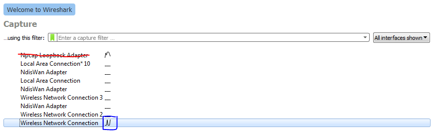
In the top left corner is the "Start capturing packets" button which has a shark icon.
Click it and there will be a swarm of messages, as most computers have substantial background traffic.
Click the stop button.
Click the "Close this capture file" button which has the icon of a paper with an X. Do not save the file. We want to capture certain traffic, but there is noise in other networked applications. We need a mechanism to filter the results.
We will get the Daytime from time-a-g.nist.gov, a server hosted by NIST
On Wireshark home, click the same connection as before
Stop and Close Capture File. Type into the capture filter bar
port 13
It should turn green, click on the "Start capturing packets" button. Wireshark will now start capturing any traffic between the local device and the any transmissions on port 13.
We will use Netcat to create traffic.
Start MobaXterm, Click Session (Leftmost Icon not plural form), Click Shell, Click OK
In MobaXterm's Shell type in:
xxxxxxxxxxnc time-a-g.nist.gov 13
Double check that a date time value is printed, this may take two attempts. If it fails to print the date or you see reset flags jump back to the step "Close the capture file"
If you are still having issues try changing the domain to one of the following instead:
This will call the Netcat application to make a TCP request to the host time-a-g.nist.gov on port 13.
Port 13 is reserved for the Daytime Protocol
https://tools.ietf.org/html/rfc867
Switching back to Wireshark there should be some traffic. Click the stop button to stop capturing. Double check that the traffic has a total of 8 segments and contains a segment with protocol DAYTIME. If not, restart from "Close this capture file" until 8 segments are received. You may also have to redo this step if you see a TCP Reset flag [RST]
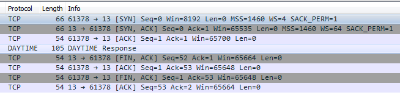
There are 8 TCP segments in total, each one is wrapped with an IP header and an Ethernet frame. Click on the drop down arrow to see the values.
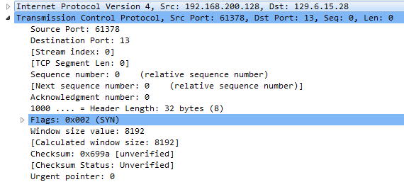
On each Layer click through each component to see where exactly each of the headers are.
The next question tasks you with filling out 8 diagrams with data from WireShark, one for each segment sent (Write on top of each section). The PDF is fillable if you have the right software. [16pt]
For Sequence and Acknowledgement numbers write the relative value.
We will be walking through creating a Node.js server that simulates the TCP half of the Daytime Protocol (We skip the UDP portion as mixing TCP and UDP traffic increases the complexity)
Read the Daytime RFC
Create a file daytime-server.js in the assignment directory.
Start with the code from here:
https://nodejs.org/api/net.html#net_net_createserver_options_connectionlistener
Save the file
Open Explorer and navigate to the assignment directory, Click the address bar and copy the path.
Start the Node.js Command prompt and type in cd (Change directory) then paste the copied path.
To start the server, type:
xxxxxxxxxxnode daytime-server.js
The message server bound should appear. Leave this terminal open.
Type in the following to MobaXterm's Shell
xxxxxxxxxxnc localhost 8124
This will send a TCP request to port 8124. localhost resolves to 127.0.0.1 which is a reserved IP address, called the local loopback which refers to the local computer.
The message hello should appear in MobaXterm's Shell, and client bound in the Node.js terminal.
Type your name and press enter into the MobaXterm Shell, the server should reply by repeating back any received message.
Press CTRL + C to end the communication. MobaXterm's version of Netcat sends a FIN to the server to end the connection, (not all versions of Netcat do this). This lets the connection terminate gracefully and keep the server running.
Run netcat again. (Do not terminate daytime-server.js )
Hint: Push up to cycle through previous commands
With the existing shell session still open, in MobaXterm start another Shell session and type in the same command again. On the Node.js end, there should be two client connected messages in a row. This demonstrates the TCP server's ability to handle multiple clients at the same time.
Close both connections and kill one of the shells.
Close the daytime-server.js with CTRL + C
Whenever the server code changes, the existing process needs to be restarted.
Rewrite the server code into the following:
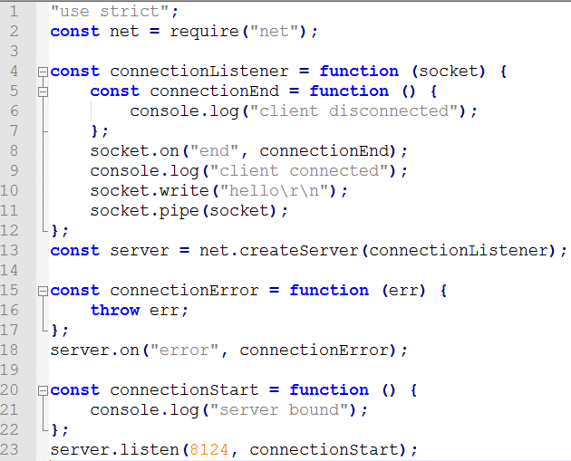
The functionality should not change, the reason for the rewrite is solely for clarity. The initial code uses language constructs and objects that we may have only covered in limited amounts (arrow functions, connection listeners, and sockets) The original code is cleaner, but also more complexity dense.
The following offers a line by line explanation of the above code
Line 1: "use strict"; Turns on strict mode, turning common mistakes into discoverable errors.
https://developer.mozilla.org/en-US/docs/Web/JavaScript/Reference/Strict_mode
Line 2: net is Node.js's built in TCP library (dgram would be the equivalent UDP library). Node.js separates its library code into packages which are imported using the require keyword. All public methods of this package are then contained inside the newly created net object.
Line 13: Create a new TCP server of type net.Server using the net package
net.createServer method accepts two optional inputs options (modifies the server's behavior) and connectionListener (callback function that fires when a new client connects)
options is truly optional (the default values are what we typically want). The sample code leaves this variable out.
connectionListener is optional, in the sense that without it, the code will not break, but it also does nothing. The sample code assigns a variable connectionListener which is a function that listens for a "connection" event before running it's function body.
https://nodejs.org/api/net.html#net_event_connection
socket - The first input variable of connectionListener is of type net.Socket and represents the connection that connectionListener responded to. The variable name is unimportant (in the original code it was called c) what matters is that the variable is the first argument.Lines 15-18: Defines a more typical event emitter for errors. Lines 15-17 define what should happen in case of a server failure. Line 18 creates an event listener that listens for a specific event. The list of server events are ["close", "connection", "error", "listening"]
https://nodejs.org/api/net.html#net_event_close
We could rewrite the code (but don't) using this listener format and it would behave the the same.
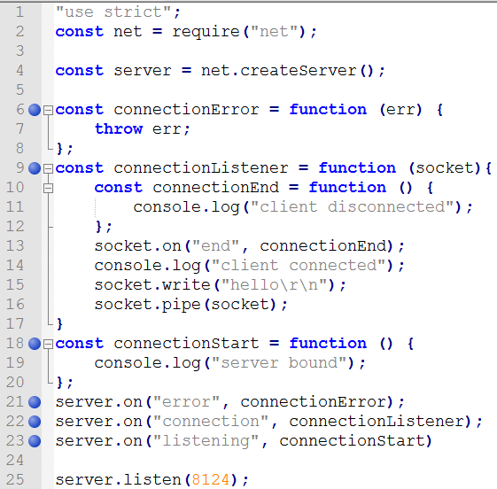
I prefer this style as it's more uniform, but do not rewrite it (yet) as the line numbers would no longer match up making the rest of the instructions confusing.
The reason the code is written the other way, is because the "connection" event is the most important event for the server and defining it when creating the server is preferred by some.
Lines 20-23: Defines an anonymous function that is saved into the variable connectionStart. When the server starts listening for connections, the function stored in connectionStart is called. Server's do not start listening until the listen method is called which binds the server to a specific port number; 8124 in this case.
Lines 4-12: Defines an anonymous function that is saved into the variable connectionListener . Whenever a client connects with the server, the function stored in connectionListener is fired and all the code inside is executed. (Conversely if no client ever connects, this code never executes)
This function has a single input socket representing the connection that was established.
net.Socket
This class is an abstraction of a TCP socket... A
net.Socketis also a duplex stream, so it can be both readable and writable, and it is also anEventEmitter.
stream - Streams deal with controlling data flows from various sources. They are useful for data sources that may not have a well defined start and end (like user input).
writable: An abstraction of a data source that is created
readable: An abstraction of a data source that is consumed
readable.pipe(writable)
A method of the readable stream that directs the input (readable) to an output stream (writable)
https://nodejs.org/api/stream.html#stream_readable_pipe_destination_options
duplex: both readable and writable at the same time, in a later assignment we will use http which can better separate request from response.
EventEmitter: individual connections can emit event similar to how the server can emit events. We can set up listeners that fire when events are emitted.
Line 5-7: Function inside of a function. This is allowed in JavaScript, the function stored in variable connectionEnd is scoped to only exist inside the connectionListener function.
Line 8: Binds the function connectionEnd to the socket's end listener. When the end event is emitted from the socket connectionEnd will execute.
Socket's have 9 events that can be emitted vs. a server's 4.
["close", "connect", "data", "drain", "end", "error", "lookup", "ready", "timeout"]
https://nodejs.org/api/net.html#net_event_close_1
Line 10: Writing to connected client
Line 11: Sockets are duplex, meaning we can read from them as well. This line reads the next input the client sends and directs the input to be sent back on the same stream.
Changing the code to:
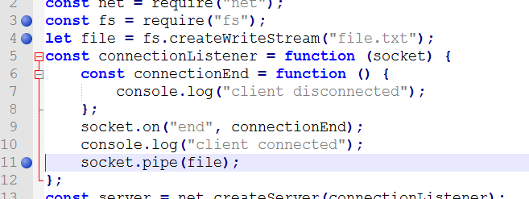
will send the typed message to a file file.txt
Changing the code to:
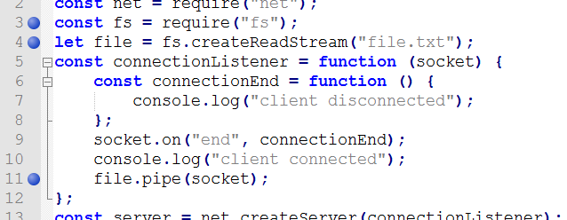
will send the contents of file.txt to any client that connects.
(Yes, the contents of one file can be piped to another)
Change the code to the following:
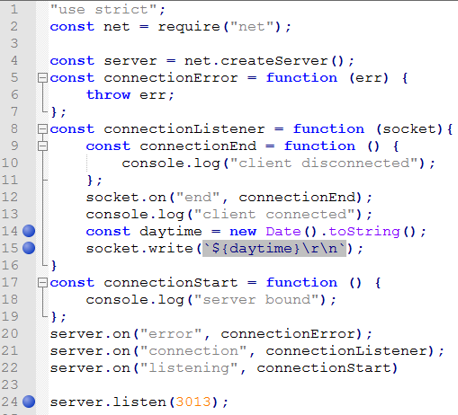
Start the node server.
Start Wireshark, this time use the Loopback adapter. This allows us to capture loopback traffic (has the same origination and destination).
Change the capture filter to port 3013, start capturing data.
In MobaXterm Shell type nc localhost 3013 which will create 5 packets in Wireshark.
Press CTRL + C to close the connection which will generate the next 4 packets.
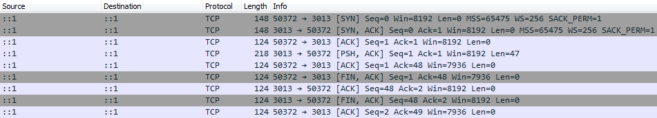
Notice that the traffic generated is not identify as a DATETIME packet by WireShark. This is because this example uses port 3013, and not the standard port 13.
Side note: I choose port 3013 instead of port 13, because some computers have these test services running and I want to minimize the chance of conflicting with the OS's version of daytime/qotd/echo. In general try to avoid using low numbered ports in the range 1-1023 when writing programs.
Draw the network traffic diagram for these 9 segments. [10pts]
Use https://sequencediagram.org to draw the diagram (The 4th icon [?] covers the syntax)
Example network traffic diagram:
Include relative sequencing numbers/acknowledgement numbers, flags, and payload data/protocol (if available) The sample video does not include all of these.
On the diagram identify the 3-way connection handshake and the 4-way termination handshake
Save it as daytime-traffic-segments-01.png
Since the machine running the client/server is the same it will have the same IP: to differentiate client from server traffic look at the ports. (One will use a high numbered ephemeral port)
In the previous example the client ended the connection.
Change the code on line 15 to the following:
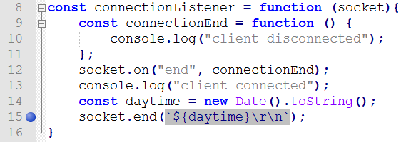
and capture the traffic again.
Draw the sequence diagram for the traffic of these 9 segments. [5pts]
Save it as daytime-traffic-segments-02.png
Next we will write a dedicated client program that will query the server, so that we no longer need to use netcat.
Read up on net.createConnection() (third signature)
Create a new file daytime-client.js
Add the following code:
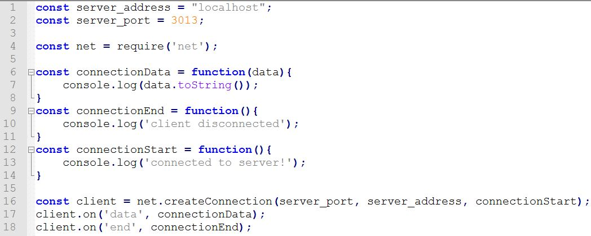
net.createConnection: creates a socket
Start a command prompt and start the server
Start a second command prompt and run the client.
In the code change the value for server_address to time-a-g.nist.gov and server_port to 13 and run it again.
Repeat the process one more time, this time using wireshark to capture the data, make sure to listen on port 13. Save the capture file as daytime-client.pcapng [5pt]
Write a TCP server according to the following specs: (Students only need to write the TCP server, skip UDP, don't write a client, instead use netcat to test it) Use port 3014.
https://tools.ietf.org/html/rfc865
Save it as qotd-server.js [10pts]
Have at least 7 different quotes that will change each day. You may decide the quotes.
Use Wireshark to capture the traffic. Examine the network traffic, specifically the contents of the payload packet (quote)
Draw the sequence diagram. Save it as qotd-traffic-segments.png [10pts]
Write a TCP server according to the following specs: (Students only need to write the TCP server, skip UDP, don't write a client, instead use netcat to test it) Use port 3015.
https://tools.ietf.org/html/rfc862
Save it as echo-server.js [5pts]
Use Wireshark to capture the traffic.
Wireshark will classify the payload packet as generic TCP because the port number is unrecognized.
Generate two echo statements CS355 and your student_id. Then close the connection using CTRL + C.
Draw the sequence diagram. Save it as echo-traffic-segments.png [10pts]
https://nodejs.org/api/net.html#net_net_createserver_options_connectionlistener
Remember that sockets are bidirectional. Any socket can be both read from and written to.
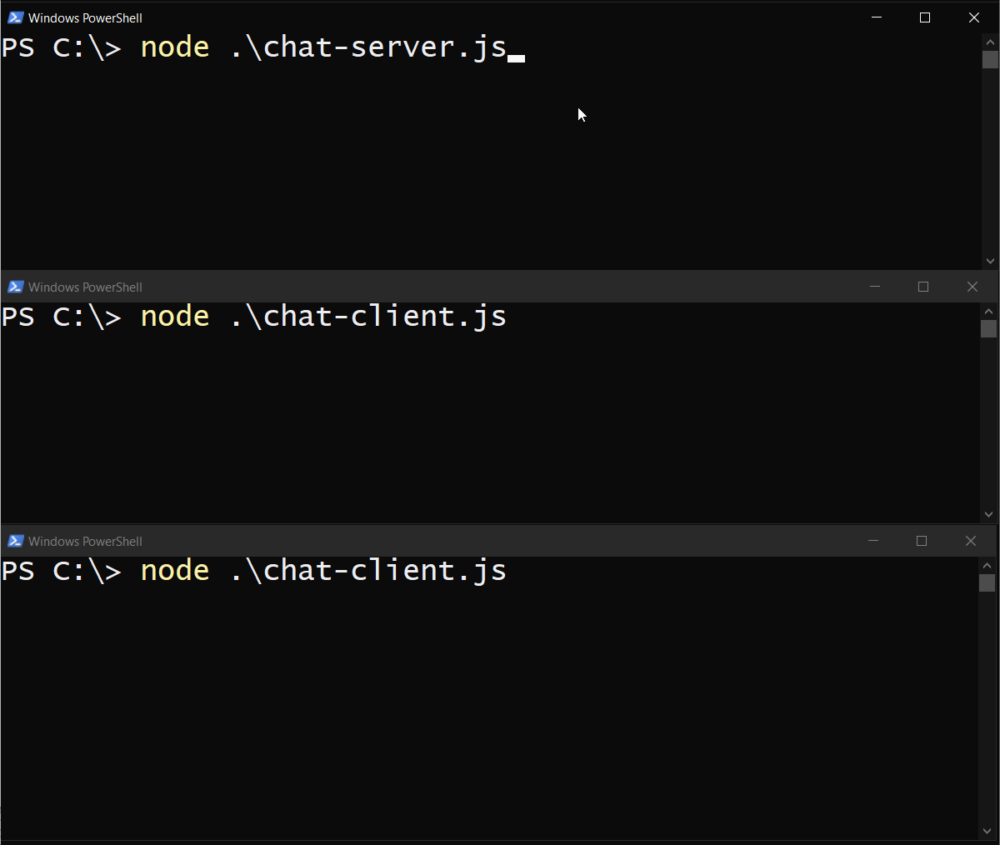
There will be two files, a server and a client. There will be only one instance of a server, but there can be many clients. All connected clients can send a message to the server which will then be sent to all other clients. [29pts]
Start with a copy of daytime-server.js as a starting template, save it as chat-server.js
The server will need to listen to the following events:
error: Throw an error
listening: Print server bound to console.
connection: Called when a client connects. Set up three listeners, then adds the socket of the current connection to an array of all connections. Finally add console.log(socket.remotePort); to the end of the "connection" event handler to see the unique ports being used by clients
Once a connection is established the socket will listen to the following events:
end: print client disconnected and remove that socket from the connections array.
error: same
data: Use socket.write() to send the data to everyone except the current connection.
https://nodejs.org/api/net.html#net_socket_write_data_encoding_callback
Start with a copy of date-time-client.js as a starting template, save it as chat-client.js
Create a variable nickname on top, but don't set it to anything yet.
Add the following code to setup console input.
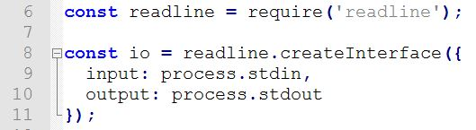
https://nodejs.org/api/readline.html#readline_readline
We will need to implement the same methods, connectionData, connectionEnd, and connectionStart as the client needs to accommodate for these three actions.
connectionStart() will ask the user to choose a nickname and then call a new function chat().
Use the readline.question() method to capture input.
https://nodejs.org/api/readline.html#readline_rl_question_query_callback
chat():
print the users nickname surrounded in braces
Wait for user input
Check if input is the string /exit, if so use socket.end() and process.exit(); to exit
xxxxxxxxxxclient.end(function(){process.exit();});client represents the variable name of the socket to be closed, it is not a keyword.
https://nodejs.org/api/net.html#net_socket_end_data_encoding_callback
Otherwise use socket.write() to send data to the server to be propagated to all clients, prefix the message with the users nickname in square braces.
Call the chat() function recursively. (Chat messages from the same user should be synchronous).
connectionEnd(): is unchanged, will also print client disconnected
connectionData():
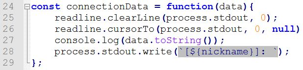
First try getting the message sent to all connected clients. Then try to exclude the sending client from the recipient socket list.
This chat application should work with different machines if you have friends to test it with, (just plug in their IP address) but it's not necessary to perform this testing.